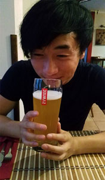
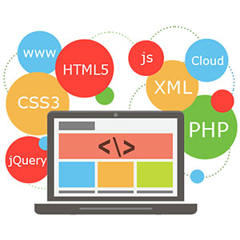

My name is Hoai Nhan Nguyen and I am a first generation Vietnamese born Irish. My parents were the first Vietnamese refugees to come to Ireland in 1979. You may wonder why my parents would move to an unknown country at the far edge of Europe. The simple answer would be Ireland’s neutrality declaration and the natural green environment. It was based on the simplicity of recreating a new life. Since the beginning I have been living in both Irish and Vietnamese culture. It provided me a new perspective of how the world works and the similarities between cultures. Ireland is where my journey begins. Below are my experience and exploration architecture, music and web development that shape the person who I am today.
Architecture has played a major role in my life, providing me a new skillset in design, communication and laterally thinking. I have recently achieved my bachelor’s degree in architectural studies in DIT in 2017.The reason why I have studied this course is due to its creative process and execution towards new concepts. I was intrigued by the though process in Architecture. I would spend majority of time designing spaces, solving problems and communicating new concepts with my follow class mates.Now that I have completed this course my aim was to continue to learn and solve problems. I knew that there was more opportunities in this world for me to explore. My plan is shiftwhat I have learnt in Architecture and apply it to web development.
During my years in Architecture school my main income source was through music with my band Saviyen. With them I had the opportunity to perform in many different gigs and events in Dublin. We would combine an array of musical genres to create a modern style approach towards music. My main instrument in the band would be the guitar which I have been crafting for nearly 9 years. I would use a percussive technique to produce a unique harmony of notes.I use music to communicate to a variety of different people. As I was learning to write music, I would surround myself with different musicians to learn and listen to their experience. I was able to conceptual musical notes and know how to put them together. Now that I’m learning new programming languages there is some layer of similarity towards there structure. I like to believe that music has played a role towards my understanding of programming. I would see code as a musical connections between notes.
I have always been interested in technology from a very young age. I had a tendency to come up with new ideas with technology for our society. I understood my ideas were just conceptual and there was a need for me understand programming to execute it. I have been learning python, networking and Linux operating independently since my completion of my bachelor degree. I would use online resources such as Udacity, Udemy and Codecademy. I knew that it wasn’t enough so decided to study web development in Griffith College. I needed some form of structure and environment to meet others who are interested in computer science. I am currently studying in Griffith College to become a web developer. The goal is to combine all of my experience and skills to create something universal for this world through technology.